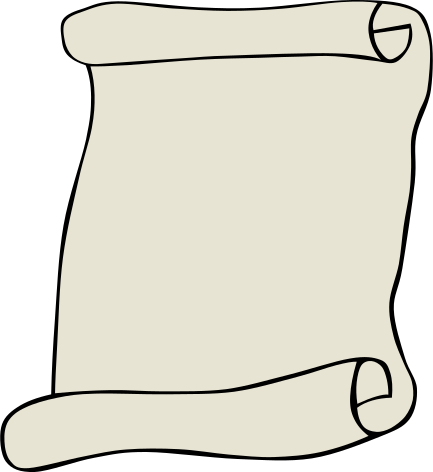
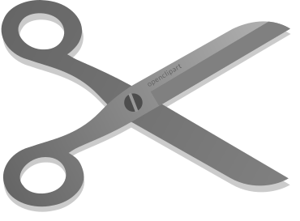
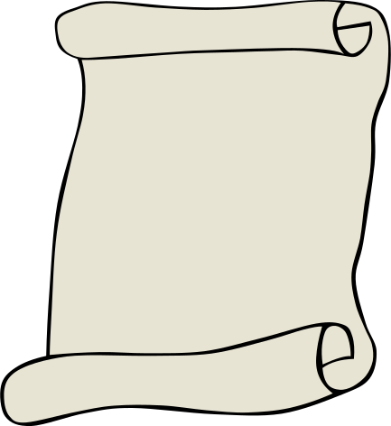
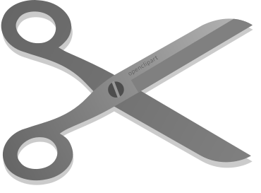

Research Projects
Major Transitions in Individuality (Current)
The Evolution of Phenotypic Plasticity (Current)
Click for a cool web visualization about this project!
Phenotypic plasticity is the capacity of a genotype to express different phenotypes (e.g. traits or characteristics) in response to different environmental conditions. Plasticity is often leveraged as a strategy to cope with heterogenous environments. In computer science, our algorithms are often 'plastic' in the sense that they will often behave very differently based on their inputs. In fact, we often get plasticity for free when we use things like 'if' statements. I am using digital evolution to study the step-by-step process by which evolution develops plastic algorithms. This work is exciting to me as a computer scientist interested in algorithms, but it's also of great interest to evolutionary biologists, revealing stepping stones for the evolution of phenotypic plasticity that are generalizable across both natural and computation systems. Here is a paper detailing some early results: (pdf) To explore the stages lineages go through in route to the evolution of plasticity, I created this web-visualization showing the phenotypic stages of evolved lineages.
ANVEL-ROS: The integration of the robot operating system with ANVEL (Spring 2014 - Summer 2015)

Robot Intent and Control (Fall 2013 - Fall 2014)

 


